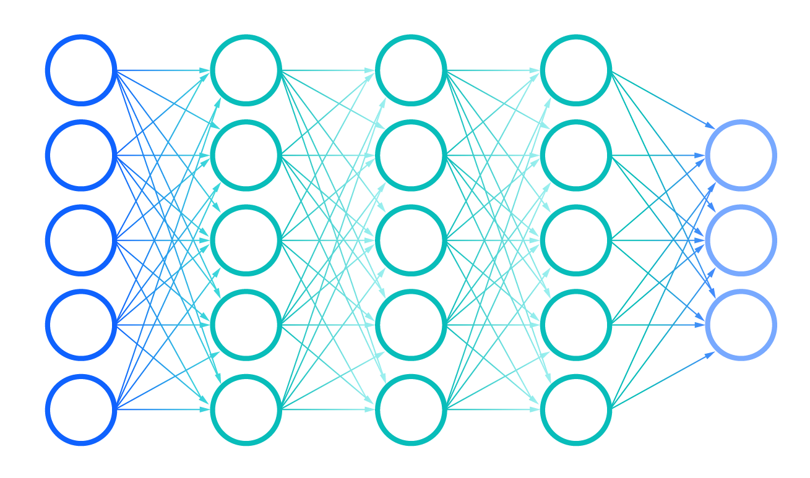

Что мы предлагаем?
- Уникальный алгоритм сортировки списка выдачи товаров
- Персонализированная выдача для каждого пользователя
- Гибкая настройка параметров сортировки
Как это работает?
Базовая идея лежащая в основе умной сортировки это SPV (Sales Per Views).
Но при грубом внедрении этой формулы она не будет работать, так как если учитывать просмотры вообще всех посетителей в данных будет очень много шума и система не сможет работать корректно. Поэтому все данные предварительно обрабатываются, чтобы избежать этой проблемы. Кроме того, наш алгоритм отслеживает только актуальные данные, что позволяет отслеживать сезонное динамическое изменение спроса на товары и соответствовать тенденциям рынка.
Базовая формула SPV уже способна выполнять основные функции, но мы реализовали её многократно улучшенную вариацию добавив дополнительные и персональные параметры.
Дополнительные параметры учитывают общие товарные особенности: рентабельность, коэффициент повторных покупок, пользовательский рейтинг, совместные покупки и прочее, а персональные параметры позволяют персонализировать ранжирование для каждого пользователя основываясь на его истории покупок, просмотров и других данных; так мы можем учитывать предпочтения по брендам, ценовому сегменту, различным характеристикам товаров и множество других характеристик.
Для ещё большего улучшения алгоритма мы используем нейронные сети.
Нейронные сети позволяют нам рассчитывать SPV товаров с более высокой точностью, предлагать значения дополнительных параметров для наибольшей эффективности алгоритма и улучшить персональную выдачу для каждого покупателя. Кроме того, мы используем нейронные сети для предсказания SPV новых товаров и персональных параметров каждого нового пользователя.
Хотите попробовать?
Попробовать базовую версию
Купить полную версию
Оформить подписку на нейронные сети